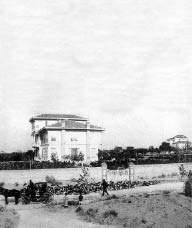

Eski sadrazamlardan bir de Mustafa Naili Paşa vardı. Evlâdı çok, ailesi kalabalık, dostu ve ahbabı ziyade; bu da meşhurdur; semahatı[145] ve efendiliği ölçüsüz bir zattı. Bu zatın Emirgân’da bir yalısı, bir de Yakacık’ta köşkü vardı. Saraylar kadar ihtişamlı; haremde ve selamlıkta düzinelerle misafirli ve dünyanın icabı olarak tabiatıyla bir sürü dalkavuklu bu köşk cesim[146] bir bahçenin ihtiva ettiği bağlar, bostanlar, yemiş ağaçları ortasında kâindi.[147] Ayrıca da mutfak, ahır daireleri ve mandıraları vardı. Devrin âdeti mucibince yazları vükela ve ricalin[148] sayfiyelere gitmeleri müsaade-yi seniye[149] çıkar çıkmaz Mustafa Naili Paşa evvela Yakacık’a; yazın ortasında Emirgân’daki yalısına; kışlarda da konağına gelirdi. O zaman sayfiyelerden konaklara avdet olunması dahi müsaade-yi seniye[150] ile hâsıl olurdu.
Yakacık’ta bilaistisna[151] Giritli Paşa ailesinin sevdiği bir köydü. Hele paşazadeler (Hilmi Paşa, Mehmed Bey ve biraderleri) burasını âdeta benimsemişlerdi ve bunlar için mevsim yoktu. Babalarından izin alır, hep beraber oturmadıkları vakitlerde de Yakacık’a giderler, kışın avcılık ederler, yazın ortalarında dahi kendi ahbaplarını beraber götürür, eğlenirlerdi. Çocukluğumda duyardım; hane halkı yüz yirmi tane imiş! Kalfalar, küçük kızlar, dadılar, bacılar, uşaklar, uşak çırakları, aşçılar, ayvazlar, arabacılar, seyisler, bahçıvanlar falan... Bu köşkte şöyle de bir başkalık vardı. Her sabah her şeyden evvel bağa çıkılıyordu. Bahçıvanların leğenlerle çeşmelerin altında soğuttukları salkım salkım üzümleri yerlerdi. Sabah kahvesi bu üzüm kürü olurdu. Bu; mutlak yapılırdı. Zira büyük paşanın emri vardı. Bir başkalık daha vardı bu dairede... Yemek zamanları bir dakika tehallüf etmezdi.[152] Vaktini bilen aşçıbaşı; hemen zillere basar, ayvazları çağırır, hazır olan tablaları başlarına koydurur, dairelere yollardı. Hıfzıssıhhaya[153] riayet eden paşa bunu da böyle isterdi ve böyle yaptırırdı.
Zeynep Hanım Köşkü
Yakacık’ta Mehmed Ali Paşa’nın kızı Zeynep Hanım’ın da şahane bir köşkü vardı. Burası da çok kalabalıktı. Zeynep Hanımefendi’nin zevci eski sadrazamlardan Yusuf Kamil Paşa (Telemak’ın meşhur mütercimi) bir taratan; hanımefendi öbür taraftan davetleriyle, ziyafetleriyle, inam ve ihsanlarıyla[154] meşhur oldukları için o bereketli günlerin mebzul huluskârları[155] birbirine rekabet eder ve daireden ayrılmamayı bir kat daha tevsik ve temin etmek[156] inadıyla oralarda hususi köşkler kiralarlardı. Şehirden gelenlerin mutlaka geceyi köşkte geçirmesi, ipekli entarilerle keten çarşaflı yataklarda yatırılması, ipekli Şam hırkalarıyla ince kürklerle üşüttürülmemesi; ayrı ayrı uşaklarla hademelendirilmesi; harem dairesinde de bir sürü halayığın; sazende ve hanendenin Zeynep Hanımefendi’yi misafirleri ve dalkavukların vazifelerini ifa etmeleri için olacak bir kat daha neşelendirmeye çalışması meşhur olan devrin masallarındandı. Bu ezvakın en âlâsı ve rânâsı[157] da haremdeki çengi ve köçekler oyun oynarlarken ara sıra ortalığa altın lira çeyrekleri serpilmesi olurdu. Her hafta cuma ve salı geceleri böyle geçerdi ve gün öğle yemekleri vaktinde köyün fukarasına üç dört tabla yemek verilirdi. Zeynep Hanım’ın ve zevcinin vefatından sonra burasını hanımın biraderi Prens Halim Paşa işgal etti ve ölünceye kadar gitti geldi. Ava çıktı, eğlendi. Babalarından sonra oğulları da hemen hemen aynı şeyi yaparlardı ve bu sayede köşk harap olmuyordu. Şimdi yerinde yeller esiyor.
Hasan Hüsnü Paşa Köşkü
Sultan II. Hamid’in Bahriye Nâzırı Hasan Hüsnü Paşa’nın da Yakacık’taki köşkü güzel köşklerimizden biri idi. Güzel de nezareti vardı. Çünkü müstesna ve hâkim bir mevkide kurulmuştu. Hatırımda kaldığına göre epeyce de müştemilatı[158] vardı. Harem, selamlık, misafir, maiyet daireleri gibi... Bağındaki üzümlerin de şöhreti vardı. Bu köşkte birçok seneler paşanın evlatları oturmuşlardı. Münavebe ile veya birbirlerini ziyaretle yalnız bırakmaya köşk boş kalmıyordu. Yalnız devir değiştiği paşalar ve nazırlar istedikleri yerlere, istedikleri gibi gitmek serbestliğinden mahrum edildikleri için Hasan Hüsnü Paşa köşke pek uğramıyordu. Yakacık’ın letafetini, köşkün zevkini lakırdısından tadıyordu. Buna rağmen köydeki fakirler ve acezeler muaveneti gene görür, paralarını alırlardı. Oğulları da babalarından sonra aynı efendiliği yaptılar. Fakat dağıldıkları için o canım köşkü ihmal etmemezlik edemediler. Nihayet içlerinden birisi dağınıklığı önledi. Diğer hisseleri satın aldı. Bahçeleri, bağları, bostanları kurtardı. Yanan harem dairesinden sonraya kalan küçük köşkü olduğu gibi ihya ve tamir etti; içine girdi oturdu. Allah daim etsin.
Başka Köşkler
A) Yakacık’ta Ayazma yolu üzerinde ve ufacık bir çam ormanı arasında güzel bir köşk daha vardı. Sahibi Dâhiliye Nezareti Evrak Müdürü Ali Haydar Bey’dir. (Bu zatın bir de İstinye’de güzel bir yalısı vardı ki bir iki sene evvel Sipahi Ocağı işgal ediyordu). Bu köşkün hususiyeti Yakacık rüzgârlarından nispeten masuniyeti ve köy içinde sessiz ve gürültüsüz bir çiftlik edası taşımakta idi. Ayazma çeşmesine civar oluşu da iyi bir şeydi. Çünkü yemekler bu su ile kaynardı, pişerdi. Bu köşk harap olmuşsa bile henüz yıkılmamıştır ve zannediyorum hâla veresenin uhdesindedir.[159]
B) Yakacık şeyhinin de güzel, tertemiz, bahçeli bağlı; havuzlu, çeşmeli bir köşkü vardı. Buraya babam beni de götürürdü. Hele amcam şeyh efendiye çok gider, gelirdi. Sonraları gidemez olduğu zamanlarda da şeyh efendi kendisine çok gelir, çok sevişirlerdi. Hâlâ gözümün önündedir; nur gibi bir adamdı. Kıpkırmızı yanakları, süt gibi beyaz sakalı, bembeyaz dişleri, gayet muntazam bir sarık sarması vardı. Bakmaya doyulmazdı. Mütevazı, zeki, neşeli ve vefalı şeyh efendiyi hepimiz hürmetle severdik. Birkaç sene evvel Yakacık’a gittiğim zaman şeyh efendiyi göremedim; göçmüş Allah rahmet eyleye.
C) Yakacık’ta ufak tefek başka köşkler de vardı ve bunların sahipleri bütün bir yaz mevsimini bu evlerde imrar ederlerdi.[160] Kendilerine göre bağları, bahçeleri, havuzları çeşmeleri vardı.
Bunlardan bir de Saray-ı Hümayun Kuyumcubaşısı Jak Bey’in köşkü idi. Evlatlarıyla, dostlarıyla, misafirleriyle beraber Yakacık’tan bihakkın istifade ederdi ve güzel hikâyeleriyle dinleyenleri güldürürdü. Şaklabanlık ediyor, dedirtecek kadar nükteli ve neşeli bir adamdı.
D) Asıl zevk, Kartal’dan Yakacık’a tırmanmakta idi. Hususi faytonlar, tek hayvanlı arabalar, talikalar,[161] sürücü beygirleri ve merkepler ve hususi atları her sabah akşam Yakacık yolunu tozuna toprağına rağmen civcivlendirirler yolcuları eğlendirirlerdi.
Akşam, 3 Mart 1947

Kilerci Osman Paşa Konağı
(Kaynak: wowTURKEY.com)